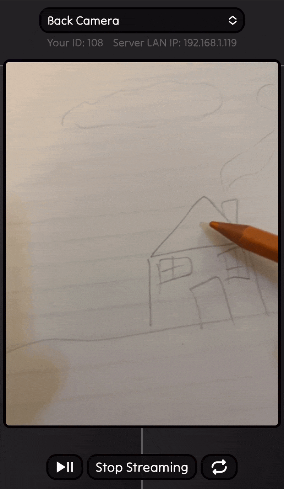
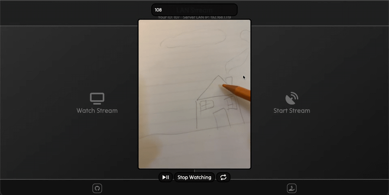

Stream across devices locally!
Streaming from an iphone
->
Watching on a Mac

->

Install on Windows

- Download the .exe and run it.
- A window and a browser tab will open.
- When you are done using the app, close that window.
- In your browser, it will say "Your connection isn't private". Click on "Advanced" and "continue to localhost".
Install on Mac [Doesn't work yet]
- Download and extract the zip file.
- Double-click "Lan Stream", a window and a browser tab should open.
- When you are done using the app, close that window.
- In the browser tab, it says "Connection is not private", click on "Show details", and then "visit this website".
- In your browser tab, you would see your id and server LAN IP on the top.
- If you want to stream just click "Start Stream".
- If you want to watch on another device, then on the other device:
- Open the url "https://[Server LAN IP]:8181". For example, if your server LAN IP is 192.168.1.119, then open the url "https://192.168.1.119:8181". The "s" in "https" is important.
- On the other device, click on "Watch Stream".
- Enter the streamer id, which is the id in the streamer's tab.
- Wait a few seconds.
Just make sure your devices are on the same network!